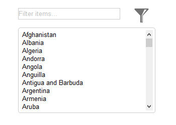

Pricing Tables (Commercial)
The Responsive Overlay Menu extension is a responsive menu that takes up the entire screen when expanded. The menu can be activated by clicking/touching the ‘hamburger’ button. The menu supports multiple categories which are presented in columns. You can set a breakpoint where the menu switches to stacked/row mode for smaller screens.
Features:
• Multiple categories
• Supports Font Awesome
• Dedicated social icons
• Alpha transparent background
• Cool animations: genie, sliding door, content push & scale and more!
The Responsive Overlay Menu extension is a responsive menu that takes up the entire screen when expanded. The menu can be activated by clicking/touching the ‘hamburger’ button. The menu supports multiple categories which are presented in columns. You can set a breakpoint where the menu switches to stacked/row mode for smaller screens.
Features:
• Multiple categories
• Supports Font Awesome
• Dedicated social icons
• Alpha transparent background
• Cool animations: genie, sliding door, content push & scale and more!

jQuery Filterable
jQuery Filterable is a script that allows you to filter the children of an element. It can work in combination with a standard input fields like an editbox or combobox (select). This extension can be useful if you want make it possible to filter items on a web page. Examples are: filter items in a list view, blog or photo gallery. But is also works with other list based objects like a combobox, tables or even with menus.
jQuery Filterable is a script that allows you to filter the children of an element. It can work in combination with a standard input fields like an editbox or combobox (select). This extension can be useful if you want make it possible to filter items on a web page. Examples are: filter items in a list view, blog or photo gallery. But is also works with other list based objects like a combobox, tables or even with menus.
Download (Last update: October 31, 2016)
jQuery Filterable Extension
Requirements:
WYSIWYG Web Builder 11.2 or higher
jQuery Filterable Extension
Requirements:
WYSIWYG Web Builder 11.2 or higher